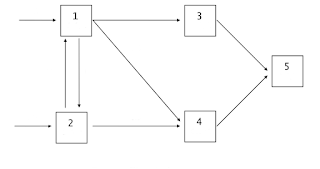

Continuando con la serie de artículos sobre estructuras de datos en python. En este caso se tocará el tema de grafos con dos ejemplos, uno con listas y otro con matrices.
Los artículos anteriores son:
Este artículo se basa en los códigos en github Grafos con listas adyacentes y Grafos con matriz adyacente y del vídeo en youtube Grafos en Python.
De ejemplo de grafo se usará un modelo de procesos de colas, a continuación la imagen:

A continuación el código manejando el grafo como una lista:
#!/usr/bin/env python
class Vertice(object):
def __init__(self, n):
#Se define el nombre del vertice y la lista de vecinos
self.nombre = n
self.vecinos = list()
def agregarVecino(self, v):
if v not in self.vecinos:
self.vecinos.append(v)
self.vecinos.sort()
class Grafo(object):
#Se crea un diccionario de vertices.
vertices = {}
def agregarVertice(self, vertice):
#Se pregunta si vertice es una instancia de Vertice y si el nombre no esta en la lista de vertices.
#Si se cumple se agrega el vertice al diccionario de vertices.
if isinstance(vertice, Vertice) and vertice.nombre not in self.vertices:
self.vertices[vertice.nombre] = vertice
return True
else:
return False
def agregarBorde(self, u, v):
#Si u y v estan en vertices. se agregan como vecinos.
if u in self.vertices and v in self.vertices:
self.vertices[u].agregarVecino(v)
self.vertices[v].agregarVecino(u)
return True
else:
return False
def printGrafo(self):
#Se muestra el grafo.
for key in sorted(list(self.vertices.keys())):
print(key + str(self.vertices[key].vecinos))
if __name__ == '__main__':
g = Grafo()
cinco = Vertice('5')
tres = Vertice('3')
cuatro = Vertice('4')
uno = Vertice('1')
dos = Vertice('2')
for i in range(ord('1'), ord('6')):
g.agregarVertice(Vertice(chr(i)))
bordes = ['53','54','31','35','41','42','45','12','13','14','21','24']
for borde in bordes:
g.agregarBorde(borde[:1],borde[1:])
g.printGrafo()
Al ejecutar el script se tiene:
python grafo-listas.py
1['2', '3', '4']
2['1', '4']
3['1', '5']
4['1', '2', '5']
5['3', '4']
Como se ve, los vertices relacionados, el 1 se conecta con 2,3 y 4, el 2 con 1 y 4, el 3 con 1 y 5, el 4 con 1,2 y 5; y el 5 con 3 y 4.
El siguiente código muestra otra manera de crear el grafo, en este caso se puede manejar el peso de los bordes (aunque no se usa en el ejemplo). A continuación el código:
#!/usr/bin/env python3
#Se importa nuevas caracteristicas de print
from __future__ import print_function
#Se crea la clace vertice que solo tiene como argumento su nombre.
class Vertice(object):
def __init__(self, n):
self.nombre = n
#Se crea la clase grafo con vertices e indices de bordes como diccionarios
#y bordes como una lista.
class Grafo(object):
vertices = {}
bordes = []
indices_bordes = {}
def agregarVertice(self,vertice):
#Si vertice es una instancia de su clase y su nombre no esta en el
#diccionario de vertices se agrega.
if isinstance(vertice, Vertice) and vertice.nombre not in self.vertices:
self.vertices[vertice.nombre] = vertice
#Se recorre los bordes y se agregan.
for fila in self.bordes:
fila.append(0)
self.bordes.append([0] * (len(self.bordes)+1))
self.indices_bordes[vertice.nombre] = len(self.indices_bordes)
return True
else:
return False
def agregarBorde(self,u,v, peso=1):
#Se agrega el borde.
if u in self.vertices and v in self.vertices:
self.bordes[self.indices_bordes[u]][self.indices_bordes[v]] = peso
self.bordes[self.indices_bordes[v]][self.indices_bordes[u]] = peso
return True
else:
return False
def printGrafo(self):
#Se muestra el grafo
for v, i in sorted(self.indices_bordes.items()):
print(v + ' ', end='')
for j in range(len(self.bordes)):
print(self.bordes[i][j], end='')
print(' ')
if __name__ == '__main__':
g = Grafo()
cinco = Vertice('5')
tres = Vertice('3')
cuatro = Vertice('4')
uno = Vertice('1')
dos = Vertice('2')
for i in range(ord('1'), ord('6')):
g.agregarVertice(Vertice(chr(i)))
bordes = ['53','54','31','35','41','42','45','12','13','14','21','24']
for borde in bordes:
g.agregarBorde(borde[:1],borde[1:])
g.printGrafo()
Al ejecutar el script se tiene lo siguiente:
python grafo-matrix-adyacente.py
1 01110
2 10010
3 10001
4 11001
5 00110
Como en el caso anterior, el vertice 1 se conecta con 2,3 y 4, el vertice 2 se conecta con 1 y 4, el vertice 3 conecta a 1 y 5, el vertice 4 conecta a 1,2 y 5; y el vertice 5 conecta con 3 y 4.
Se tienen dos formas de representar un grafo, puede usar el que prefiera, dependiendo de la complejidad, si se necesita manejar pesos, la opción es el de la matriz.
¡Haz tu donativo! Si te gustó el artículo puedes realizar un donativo con Bitcoin (BTC) usando la billetera digital de tu preferencia a la siguiente dirección: 17MtNybhdkA9GV3UNS6BTwPcuhjXoPrSzV
O Escaneando el código QR desde la billetera:

Comments !